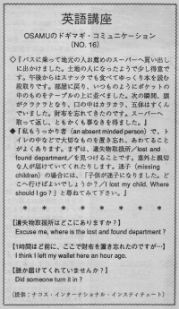

忘れ物をしました。
Osamu went to a supermarket that was recommeded by locals. He was proud of himself because he could go somewhere where other tourists didn't go to very often. After that, he bought something and went home. He took everything out from his pocket but realized his wallet was not there. He felt dizzy, his mouth got dry and his body felt cold. He went back there and got it. Often people are absent-minded and forget things. You should find the lost and found department if you have lost something in a big place. If you have lost a friend or someone, you can ask if they will page them for you. They will do this through the P.A. system in the store. If you have lost money, sometimes people are not honest and will keep it. If someone returned the money, you should be suprised and grateful. You should retrace your steps and try to remember where you left your things. Here are some sentences that might be helpful: I think I dropped my wallet somewhere on the 2nd floor. I left it on the conter near the Gucci bags.
バスに乗って地元の人お薦めスーパーへ買い出しに出かけます。土地の人になったようで少し得意です。午後からはスナックでも食べてゆっくり本を読む段取りです。部屋に戻り、いつものようにポケットの中のものをテーブルの上に並べました。次の瞬間、頭がクラクラとなり、口の中はカラカラ、五体はすくんでしまいました。財布を忘れてきたのです。スーパーへ取って返し、ともかく事なきを得ました。
私もうっかり者（an absent minded person）で、トイレの中で大切なものを置き忘れ、あわてたこともあります。まず、遺失物取扱所／lost and found department／を見つけることです。意外にも親切な人が届けてくいてくれたりします。迷子（missing children）の場合には、「子供が迷子になりました。どこへ行けばよいでしょうか？／I lost my child. Where should I go?」と尋ねてみて下さい。
遺失物取扱所はどこにありますか。
Excuse me, where is the lost and found department?
１時間ほど前に、ここに財布を置き忘れたのですが・・・
I think I left my wallet here an hour ago.
誰か届けてくれていませんか。
Did someone turn it in?

| © 1995-2013 NACOS International Institute. All Rights Reserved. |